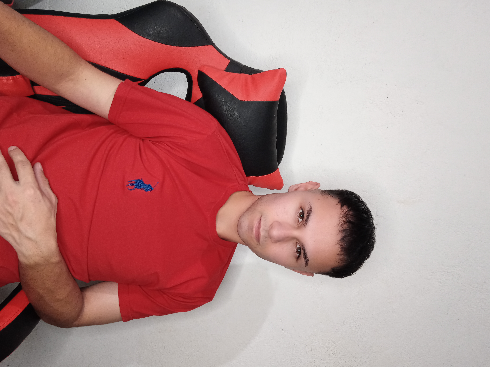
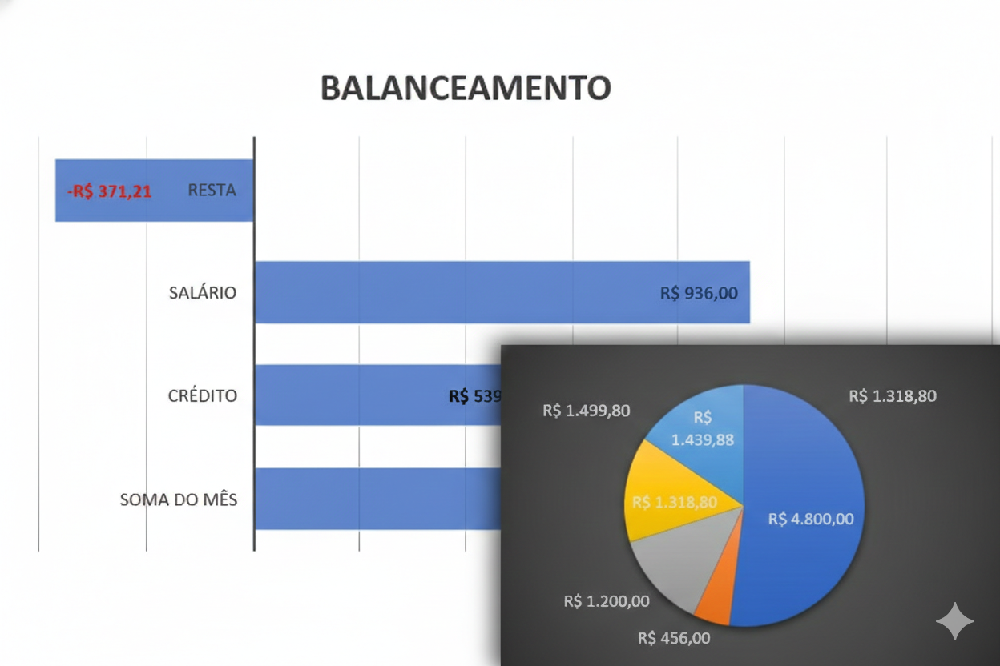
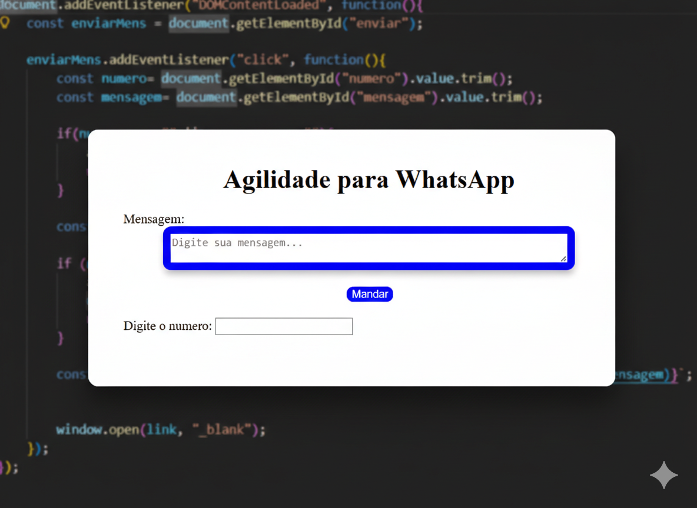

Giovani Medeiros
Desenvolvedor de Sites, Aplicativos e Perito Judicial
Especialista em Desenvolvimeto de aplicações e web modernas, análise de dados e identificação de vulnerabilidades em sistemas de informação e suporte técnico-jurídico.
Como Perito Judicial, atuo na elaboração de laudos técnicos focados em análise de dados, investigação de erros de código e identificação de vulnerabilidades em sistemas de informação.

Competências & Tecnologias
Domínio em ferramentas modernas de desenvolvimento e análise de dados.
Análise de Dados
Tratamento de dados, geração de relatórios e gráficos estatísticos dinâmicos e persistência segura para tomada de decisão.
Perícia Judicial
Avaliação de sistemas, auditoria de código, verificação de vulnerabilidades laudos técnicos especializados.
Automação
Desenvolvimento de robôs para otimização de processos de negócios.
Projetos em destaque
Aplicações práticas e soluções desenvolvidas.

Dashboard Financeiro e Orçamentário
Aplicação Web/APK interativa para gestão orçamentária, com gráficos em tempo real.

Agilidade para WhatsApp
Ferramentas de web utilitária focada em agilizar o envio de mensagens automáticas.
Perícia Judicial e Assistência Técnica
Atuação técnica em litígios envolvendo tecnologia da informação, assegurando rigor científico na produção de provas digitais, investigação técnica e elaboração de laudos periciais.
- Análise de dados
- Investigação de Vulnerabilidades e incidentes de segurança
- Elaboração de laudos técnicos para processos judiciais
Vamos Coversar?
Entre em contato
Aproveite e entre em contato pelos canais abaixo para propostas e parcerias.